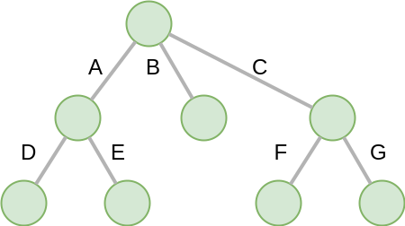
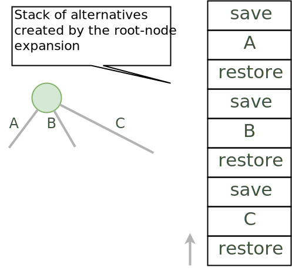
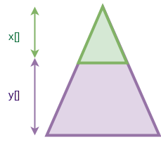

Part 3: State Management (Trail + Copy) and Search¶
We ask you not to publish your solutions on a public repository. The instructors interested to get the source code of our solutions can contact us.
Slides¶
Theoretical Questions¶
DFS Explicit Stack¶
The search algorithm of MiniCP is depth-first-search. It is implemented using a recursive method in the class DFSearch.java. To avoid stack-overflow exceptions due to a too deep recursion in Java we ask you to reimplement the depth-first search with an explicit stack instead of relying on the recursion-call stack.
Consider the following search tree where branches to execute are represented as letters:
A DFS exploration should execute the above branches in the following sequence A, D, E, B, C, F, G. When backtracking, the previous state must be restored, requiring that the state is saved with the save operation before the branch is executed and restored with the restore operation when the branch terminates. For example; a valid sequence that successfully saves and restores the state when backtracking is: save->A->save->D->restore->save->E->restore->restore->save->B->restore->save->C->save->F->restore->save->G->restore->restore. Note that the state manager performs a save operation prior to searching and a restore operation after search concludes. The save operation is executed in pre-order fashion while the restore operation is executed in a post-order fashion. The following code snippet shows a recursive implementation. Note that the saving and restoring of states is performed in the method withNewState of the state manager sm:
private void dfs(SearchStatistics statistics, Predicate<SearchStatistics> limit) {
if (limit.test(statistics))
throw new StopSearchException();
Procedure[] branches = branching.get();
if (branches.length == 0) {
statistics.incrSolutions();
notifySolution();
} else {
for (Procedure b : branches) {
sm.withNewState(() -> { // State is saved before procedure is called.
try {
statistics.incrNodes();
b.call();
dfs(statistics, limit);
} catch (InconsistencyException e) {
statistics.incrFailures();
notifyFailure();
}
}); // State is restored when procedure terminates.
}
}
}
Skeleton code for a solution is given below. However, there are many possible implementations, so feel free to not use the skeleton code.
private void dfs(SearchStatistics statistics, Predicate<SearchStatistics> limit) {
Stack<Procedure> alternatives = new Stack<Procedure>();
expandNode(alternatives, statistics); // root expansion
while (!alternatives.isEmpty()) {
if (limit.test(statistics))
throw new StopSearchException();
try {
alternatives.pop().call();
} catch (InconsistencyException e) {
notifyFailure();
statistics.incrFailures();
}
}
}
private void expandNode(Stack<Procedure> alternatives, SearchStatistics statistics) {
// TODO
}
The idea of this solution is wrap the save, restore, and branch executions inside Alternative closure objects, as illustrated on the next figure showing the stack after the root node expansion at line 3.
Check that your implementation passes the tests DFSearchTest.java.
Remark (optional): It is possible to reduce the number of operations by skipping the save and restore operations for the for the last branch of any node (the branches B, C, E, and G in the example above). The sequence of operations becomes save->A->save->D->restore->E->restore->save->B->restore->C->save->F->restore->G. As stated above, the state manager will perform a save operation before searching and a restore operation once searching concludes.
Implement a Custom Search¶
For the Quadratic Assignment Problem (see the slides on the Element constraint of Part 4: Sum and Element Constraints), modify the model QAP.java, where variable x[i] denotes the location of facility i, in order to implement a custom search strategy (and ignore the instructions on discrepancy search). A skeleton code for a custom search is as follows:
DFSearch dfs = makeDfs(cp, () -> {
IntVar sel = selectMin(x,
vari -> vari.size() > 1, // filter
vari -> vari.size() // variable selector
);
if (sel == null)
return EMPTY;
int v = sel.min(); // value selector (TODO)
return branch(
() -> cp.post(equal(sel,v)),
() -> cp.post(notEqual(sel,v))
);
});
As a variable selection heuristic, select an unfixed variable x[i] (a facility i not yet assigned to a location) that has a maximum weight w[i][j] with another facility j (where x[j] may be fixed or not).
As a value selection heuristic, on the left branch place this facility on a location k which is the closest possible to another location possible for the facility j you selected earlier. On the right branch remove the value k.
Hint: selectMin is a generic method parameterized by ‘T’ and ‘N’ (the type on which the minimum is computed). To implement this heuristic, adding pairs (i,j) as a type for T is probably the easiest way to go:
public static <T, N extends Comparable<N>> T selectMin(T[] x, Predicate<T> p, Function<T, N> f)
Sequencer Combinator¶
Sometimes we wish to branch in a given order on two families of variables, say x[] and then y[], as shown in the next picture. A variable in y should not be branched on before all the variables in x have been fixed. Furthermore, we may want to apply a specific heuristic on x that is different from the heuristic we want to apply on y:
This can be achieved as follows:
IntVar [] x;
IntVar [] y;
makeDfs(and(firstFail(x),firstFail(y)))
The and factory method creates a Sequencer.java. You must complete its implementation.
Check on INGInious¶
When you are done implementing your constraints and branching functions, do not forget to upload your code on INGInious to actually get your grade!

{kind=link}
{kind=link}
{kind=link}